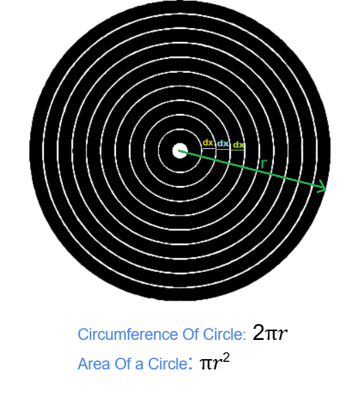
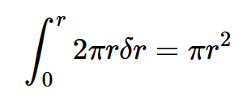
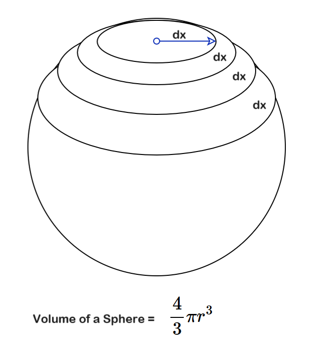
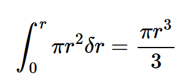

Wrong Maths, Right Attitude
The other day I was talking to my nephew who, I can't help but boast, is studying Mathematics at the University Of Illinois at Urbana Champaign. I was telling him that I liked mathematics but I was never really any good at it. I was somewhat good at finding questions, but I still am not that great at solving them. When I first learned about the amazing thing called integration, I immediately attempted to check if I can somehow put this mathematical tool to any other use apart from the first thing they teach you about integration that "integration gives you the area under a curve between two specified points."
I knew that the circumference of a circle is 2πr. Also, we all are taught that a line itself does not have any thickness, but having learned about the limits in earlier classes, I thought that we can safely say that the thickness of a line is infinitesimally small and it tends to zero. Let us say that the thickness of the line running along the peripheral of a circle is δr. If we have to talk in a strict mathematical sense then the line is always a straight line, something that joins two points and extends infinitely in both directions. So when I say line here I am really referring to the curve that makes up a circle.
Now assume that we have an infinitesimally small circle whose radius itself is equal to δr. I thought, that if we continue to draw multiple concentric circles around this super tiny circle and each time increase the radius by an amount of δr then we will soon end up with an entire disc made up of these concentric circles that are touching each other. We can say that the area of this outermost circle that encompasses all the inner concentric circles is nothing but the summation of perimeters of all the inner circles.
So if we assume that the radius of our tiny circle is δr then its area will be πδr².
I already said that the radius of the innermost circle is almost zero. So to find the summation of the perimeters of all the circles we will have to just integrate this πδr² from 0 to r.
And to my surprise it gave me the correct formula !!
I was so excited with this finding and decided to take it a notch higher. So I decided to find the volume of a sphere.
I thought a sphere can be thought of as a stack of discs of infinitesimally small thickness and varying radii. I pictured that if we sliced a sphere very finely, perfectly horizontally then we will end up with infinite discs from radius 0 to all the way up to r and then again another set of super fine discs whose radii gradually decrease all the way up to almost zero.
I thought that if we add up the areas of all these discs with infinitesimally small thickness then I should easily get the volume of the entire sphere. So it is just a matter of integrating the Area of a circle formula from 0 to r and double it. Because if we integrate from 0 to r then it will give us the volume of the upper hemisphere and then doubling it should just do that trick.
Area of a circle as we all know is πr², so I naively thought that I just needed to integrate this from 0 to r.
If I double it I should get the volume of the entire sphere. Right?
Wrong !!! Volume of a sphere is not 2/3πr³ but it is 4/3πr³. That's it, I could not understand the fallacy of my logic and I simply gave up. Some 30 years later my nephew helped me to understand the flaw in my logic.
So the flaw in my logic is that I assumed that the radius of the discs is increasing linearly from 0 to all the way up to r. That is not the case here. When the radius linearly increases from 0 to r then it becomes a "cone", not a hemisphere.
The mathematical treatment above is wrong at so many levels. If the disc has infinitesimally small thickness let us call it δT, then that δT has to show up somewhere in our integration !!
But this is not about what was wrong with my mathematical treatment and it is also not about the mathematics of the Volume but something else completely.
By the way if you are really interested in the correct step by step treatment then do check out this video.
The Right Attitude
I could not figure out what was wrong with my approach. I gave up on it and never really followed up. Who knows if I had shown some persistence and followed up on this tenaciously then maybe I would have been a tad bit better at mathematics than what I am today.
The main point is that even if my Mathematical treatment was wrong, the attitude was right. I had these questions and curiosity but lacked the perseverance, which in my opinion is the most important thing and is often overlooked.
There are gifted people like Einstein who really follow up on their ideas and are actually able to achieve great things.
Then there are people who are really intelligent but they are not curious or don't get that many questions. I guess when you are able to understand anything easily, somehow you do not get that many questions. I think that is a real tragedy, because without curiosity or any real questions/problems that you want to passionately follow, you will not be doing any justice to the intelligence that "god" (if at all there is one) or the genetic lottery has generously gifted you with.
And then there are people like me who may once in a while get curious, and will identify some problems or questions. But will never follow up with those things and give up easily and that is even worse.
Angela Duckworth effectively points out in her book "Grit: The Power Of Passion and Perseverance" that we only see how champions are able to effortlessly achieve something that is very difficult, but what we don't see is how many hours, days and years they have toiled themselves at their game, their art, honing their skills or working on a really hard problem. We, the lazy lot like me, always like to quickly give up even without trying hard and say "Oh that guy is gifted, he is a born genius, I can never possibly do anything even remotely close to what he or she can do."
Perseverance is really important and is often underestimated. If Geoffrey Hinton, Yann LeCun had not shown perseverance and had given up on Neural Networks because Marvin Minsky had written off Neural Networks as a dead-end, then most likely we would be still living in the AI Winter. By the way, if you are interested in the history of Artificial Intelligence then check out the book "Genius Makers" by Cade Metz. Metz talks in detail about this AI Winter in this excellent book.
Curiosity is also important, it drives you to learn new things. When I first learned about the well known ports and found out that the well known port for HTTP protocol is 80 and well known port for FTP is 21. I had known about the tool called "ping", I got curious and wanted to know what is the well known port for "ping", is there a program listening on a specific port that is responsible for the echo we receive when we ping any IP Address or WebSite? This was way before the advent of Google or GPT, so I had to talk to the people who knew stuff or go through some books to find answers. And in the process found out more details about the TCP/IP stack and the ICMP protocol that makes "ping" and "tracert" possible.
Curiosity leads to questions, questions lead to answers and new answers may lead to innovation. If a curious mindset is important then following up persistently on your questions / problems is probably more important than anything.
Now some people argue that you need to have passion about a particular thing and only then can you follow it through or exhibit perseverance. Cal Newport, in his excellent book "So Good They Can't Ignore You" discusses this aspect in detail. I agree with him completely that the advice "Follow your passion" can be very misleading and may cause more confusion and frustration for most of the people because they don't have a strong passion about a specific thing. Passion develops over time. The more we actively engage in learning, the more we nurture our curiosity. The same can be said about passion.
By the way, one of my friends was of the opinion that references to "God" and Einstein seem a little out of place here. Now I don't want to get into the whole "Nature vs. Nurture" debate here. Even though my views on that debate lean towards the "Nature" side, what I am trying to say here is a bit contradictory to that. Nature alone does not guarantee "success".
But what if the quality of perseverance, determination to keep going is itself hardwired in only some of us by "nature"? Who knows, maybe that is also true. If that is really the case then it is only fair to say that "Life is not fair. Get used to it".
Let us for the time being, leave the "amor fati" to Nietzsche and come back to my main point. However cheesy or cliched it may sound, there is definitely some truth to the saying.
"Success is 1% inspiration and 99% perspiration."
It's not just about being brilliant but about that drive to explore or to keep going even if it's hard. It's that relentless pursuit of knowledge that really makes the difference. It's not about innate talent but actively seeking out knowledge.
It's not always about having the right answers, it's about embracing the process of learning. It's about being curious, asking questions, not being afraid of making mistakes and having the determination to keep going even when things get tough.